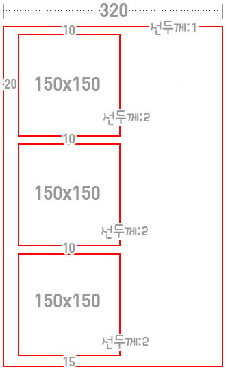

현재 첫번째 박스의 위쪽공간이 20픽셀인 상황!!!
가상클래스는 말 그대로 클래스네임을 따로 넣어주지 않고도 사용하는 것을 말한다.
안쪽박스의 클래스 네임을 전부 [one]으로 주고 위쪽으로 마진을 10픽셀을 주었다면
안쪽 첫번째 박스의 마진이 wrapper에 준 패딩이랑 겹쳐서 위쪽이 총 20픽셀의 공간이 생긴다.
위처럼 같은 이름을 가진 동급의 자식요소들중
first-child를 써서 첫번째 요소를 지정하거나 last-child를 써서 마지막 요소를 지정할 수 있다.
멀티클래스를 사용ㅇ했을때와 동일하게 wrapper에 패딩을 사방으로 넣고
one에 위쪽으로 패딩 10픽셀을 준 후, one용 첫번째 요소의 마진을 다시 0으로 만든다.
그리하여 결과물은 똑같이 출력이 된다.